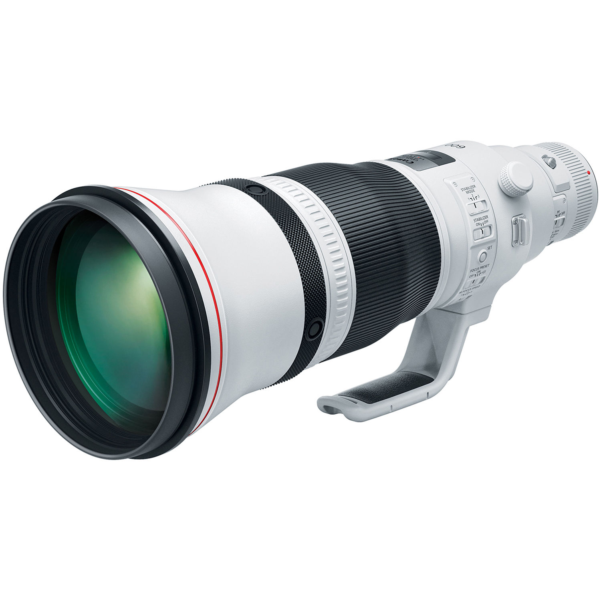

I have a Canon 7D Mark I, it is a wonderful camera and takes great pictures.
All the bird pictures you saw on the previous page were taken with that camera.
The 7D price range is $300-$400 used, and is completely worth it. Another camera
I would suggest is a 5D, I have not personally used one but they have very good
feedback. Their price range is in the $200-$350 range. The 6D is also highly
rated, they sell for around the same as the 7D. There are of course more expensive
options, but these get you started. I do not have very much knowledge in
world of Nikon, but they are nice as well.
Picture took with a Canon 7D and Tamron 150-600mm G1 lens. Just as important as your camera is your lens. I use a Tamron Generation One
150-600mm, which I love. Lenses is were the pricing gets high for the right one.
If you could afford it, I would say get the Canon 600mm lens, it is extremely nice.
The Tamrons come in a close second, with a bit lesser construction. and Sigmas in a third.
The prices for a Canon 600mm is anywhere from $2,500-$5,000. You can get a Generation 2
Tamron brand new for about $1,000, or a Generation 1 for $500-$600. Sigmas are from $700 used
to $2,000 brand new. I prefer the Tamrons because the are lighter then the Canons, and built better
than the Sigmas. If you can not afford those you can shop around for a nice 400mm of those brands. I use Steiner binoculars, they have been great. You can pick up a pair on
Ebay for anywhere between $100 and $500. This paragraph will be short and
sweet due to my lack of knowledge of binoculars other then Steiner. You can shop around
and see what you think, and find what you like. Last, but not least, field guides. I stated earlier that I prefered Ted
Floyds guide, which is the best one I have come across. Another good one
is Stan Tekiela's line of state-by-state field guides, which I find very
effecient. The only downfall to Tekelia's books is that he only included
the commonly seen birds in it. The cover of Ted Floyd's book. My sister uses a Canon 20D and has gotten some amazing shots, I would suggest
that camera if you are on a budget. 20Ds generally go for $40-$70 and give
lots of bang for the buck. If you can't afford a large lens, she used a Canon 250mm
lens and it worked great.
Lenses

Binoculars
Field Guides
Budget Gear